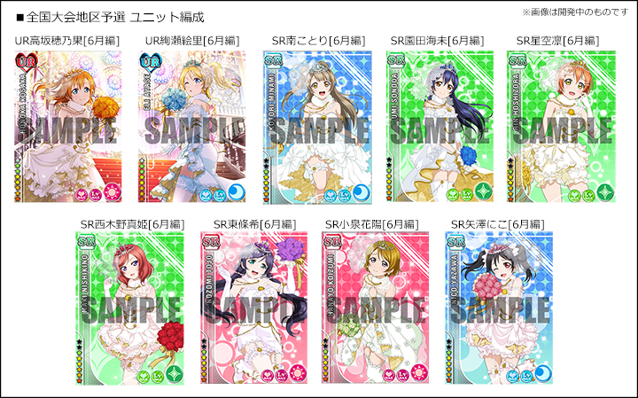

スクフェス感謝祭 2015
初めてのスクフェス単独リアルイベント！
ユーザー数全世界1000万人突破を記念した様々な展示、ステージイベント、記念グッズの販売などを予定しています。
同会場内で全国大会の東京地区予選、決勝大会も開催します！
開催日時
日時：6月6日(土)・7日(日) 10:30～17:00（最終入場16：55）
会場：池袋サンシャインシティ展示ホールA-2,A-3,B,C
【入場無料】
※当日の混雑状況により、一時的に入場を制限させていただく場合もございます。予めご了承ください。
※当日の状況により最終入場のお時間が変更になる可能性がございます。
スクフェス全国大会
全国のスクフェスユーザーが腕を競い合う初めての大規模大会イベントです。
事務局が用意した端末で、固定のユニット・規定の曲で「ライブ」をプレイしていただき、
各地区で最もスコアが高かった上位2名が決勝の舞台へと進めます。
正確にリズムを刻む技術だけでなく、スキル発動の運が結果に影響することも…？
優勝を目指して、みんなでシャンシャン♪しましょう！
決勝大会ルール
6月7日（日）10：40～12：00「スクフェス感謝祭2015」イベント内の特設ステージにて行う、全国決勝のルールを発表いたします。
- 準決勝、決勝ともに4人対戦のスコアマッチ形式で行います
- 難易度はEXPERTで、3曲のメドレーになります
- 課題曲は「タカラモノズ」「ユメノトビラ」「KiRa-KiRa Sensation!」です
- 端末設定は基本的に地区予選と同じになります
- ユニットも地区予選と同じですが、特殊仕様で一切のスキル発動がなくなります（スキル発動がないためカットインは入りません）
- ライブ後のSCOREが同点の場合は、COMBO数がより多い方、『PERFECT』『GREAT』の数がより多い方、『GOOD』『BAD』『MISS』の数がより少ない方の順に順位を決定いたします
- コンティニューはできません
《端末環境》
使用端末：iPod touch 第5世代（iOS8）
※事務局にて用意した端末とヘッドフォンを使用していただきます。
※参加者自身で持ち込んだ端末、及びケースやアクセサリ類は使用できません。
※ケースや保護フィルムはついておりません。
※ステージ上のスクリーンへゲーム画面を出力するためライトニングケーブルを繋いでおり、外すことはできません。
※端末を手に持ってのプレイも、机においてのプレイも可能です。
※すべり止めマット及びクリーナークロスをご用意しております。
《ゲーム内環境》
ユニット編成：固定(UR高坂穂乃果[6月編]、UR絢瀬絵里[6月編]、SR南ことり[6月編]、SR園田海未[6月編]、SR星空凛[6月編]、SR西木野真姫[6月編]、SR東條希[6月編]、SR小泉花陽[6月編]、SR矢澤にこ[6月編]）

| カットイン | 大 |
|---|---|
| 文字サイズ | 大 |
| 音量バランス | 全てデフォルト |
| エフェクト | ON |
| タイミング調整 | デフォルト |
更新情報
▼5/19
感謝祭の「物販のご案内」ページに会場物販のご案内、商品情報などを追加いたしました。
▼5/15
感謝祭の「イベント概要」ページに「来場者特典」の情報を追加いたしました。
▼5/14
感謝祭の「体験コーナー」ページを追加いたしました。
▼5/11
感謝祭の「展示」ページを追加いたしました。
▼4/27
感謝祭の「グッズ付き優先入場券（ステージ観覧応募権付）」入金キャンセル分再販売のお知らせを追加いたしました。
▼4/24
感謝祭の「物販のご案内」ページを追加いたしました。
▼4/3
感謝祭ステージ情報を一部更新しました。
▼4/2
感謝祭の開場時刻、「グッズ付き優先入場券（ステージ観覧応募権付）」の入場開始時刻を更新しました。
▼3/27
下記を更新しました。
スクフェス全国大会
・地区予選大会参加要項（端末、ユニット編成）
・物販のご案内
スクフェス感謝祭2015
・入場方法
・「グッズ付き優先入場券（ステージ観覧応募権付）販売のご案内
・ステージ情報
・イベント全体に関する注意事項